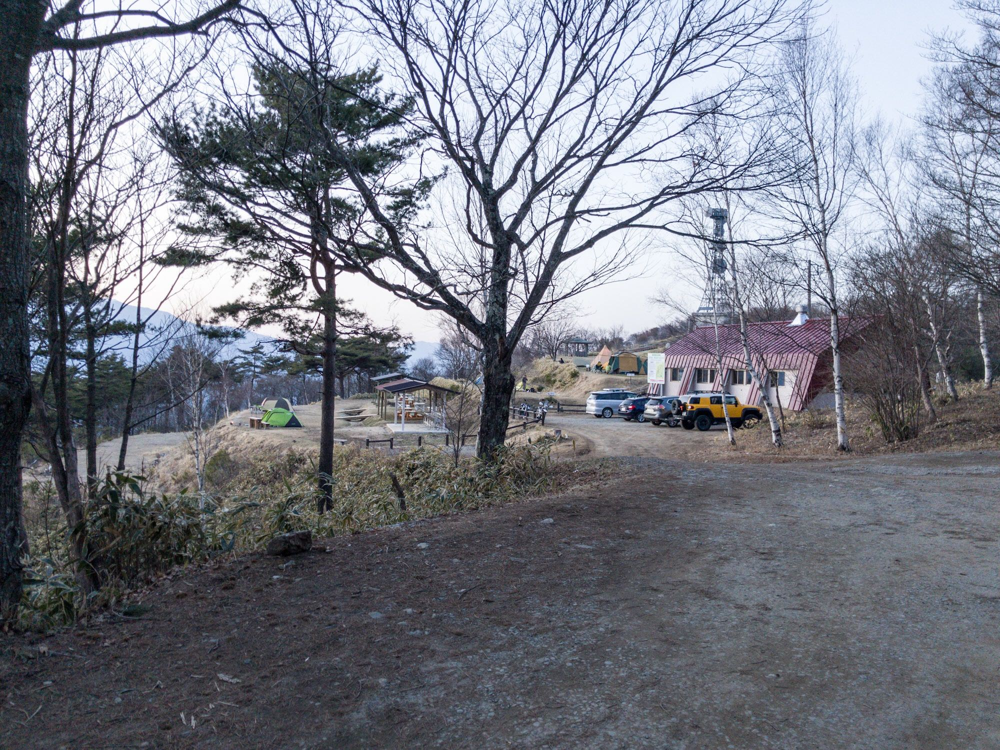
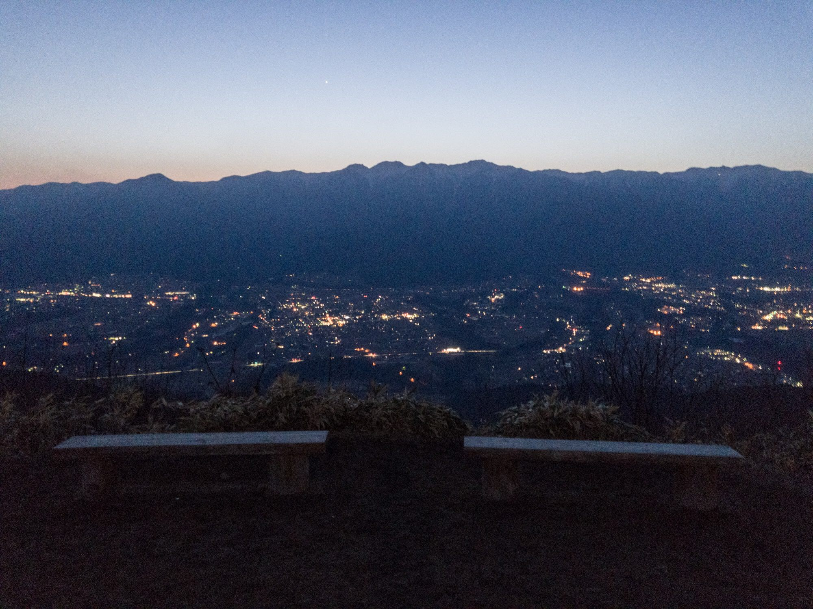

About
Mount Jinbagata (陣馬形山, Jinbagatayama) is a 1,445-meter-high mountain located in Nakagawa Village, Nagano Prefecture, Japan. Affectionately known as the "Campsite in the Sky".
Additonal Info
The mountain's name (literally meaning "Battle-Field Shape Mountain") dates back to the Sengoku (Warring States) period, when its peak served as a vital watchtower and beacon-fire (noroshi) communication hub for the warlord Takeda Shingen.
Related Link
Jinbagatayama Campgrounds Official Websites
(https://jinbagata.jp/camp/)
Location
Gallery

By user u/peaceshot on reddit through imgur

By user u/peaceshot on reddit through imgur